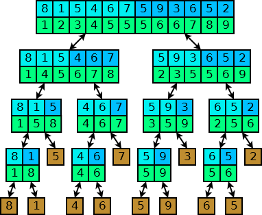

Podsumowanie
Zanim przejdziemy do omawiania złożoności algorytmu porządkowania przez scalanie,
zapoznajmy się dokładie z pseudokodem tego algorytmu.
| Dane: |
Liczby naturalne idx1, idx2 oraz ciąg liczb
xidx1, xidx1+1,...,
xidx2-1
|
| Wynik: |
Uporządkowany ciąg x'idx1,
x'idx1+1,..., x'idx2-1,
który powstał z przestawienia elementów ciągu xi.
|
| Krok 1. |
Jeżeli idx1 ≥ idx2-1, to zakończ działanie funkcji.
|
| Krok 2. |
Oblicz idxSr := ⌊(idx1+idx2) / 2⌋.
|
| Krok 3. |
Wywołaj rekurencyjnie funkcję „uporzadkuj” dla parametrów idx1 oraz idxSr.
|
| Krok 4. |
Wywołaj rekurencyjnie funkcję „uporzadkuj” dla parametrów idxSr oraz idx2.
|
| Krok 5. |
Wywołaj funkcję „scal” z parametrami idx1, idxSr oraz idx2.
|
Zauważmy, że: porównanie elementów tablicy jest wykonywane jedynie wewnątrz funkcji „scal”,
dlatego powinniśmy sobie przypomnieć, że funkcja „scal” wykonywała maksymalnie
a+b-1 porównań (liczby a oraz b określają długość
scalanych fragmentów taclicy). Ponieważ szacujemy liczbę porównań z góry możemy powiedzieć,
że funkcja „scal” wykonuje tyle porównań ile wynosi długość wynikowego ciągu.
Spójrzmy się na poniższy rysunek, który zawiera drzewo wywołań funkcji „uporzadkuj”:

Niebieskimi kororami oznaczyliśmy podział fragmentu tablicy na kolejne dwa fragmenty,
natomiast kolorem zielonym zaznaczyliśmy scalone fragmenty. Zauważmy, że: w każdym wierszu
(oprócz ostatniego i przedostatniego) długości ciągów sumują się do n
(liczba n określa długość całej tablicy liczb).
Wobec tego funkcje „scal” w poszczególnych wierszach wykonują co najwyżej n porównań.
Oszacujmy teraz liczbę wierszy. Zauważmy, że: w każdym wierszu dzielimy ciąg na pół.
Wobec tego, jeśli przypomnimy sobie naszą definicję logarytmu, zauważymy,
że liczba wierszy jest zbliżona do logarytmu z liczby n.
Wobec tego liczbę porównań możemy oszacować przez n · log2 n.